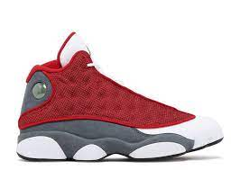

|
Hello, world. I am [Sulley Mohammed] [I am 17 years old and stay with my mother and father, my 2 little brothers and 1 older sister. My dream is to graduate college and become a entrepreneur. Something i am passionate about is basketball. i grew up watching and playing basketball my whole life so without that i feel like theres a piece of me missing.] |
|  |  |